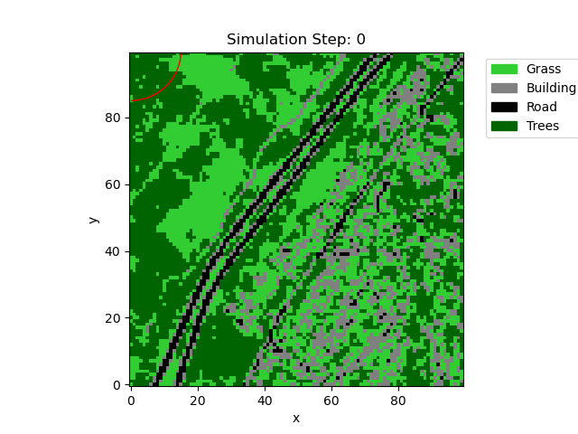
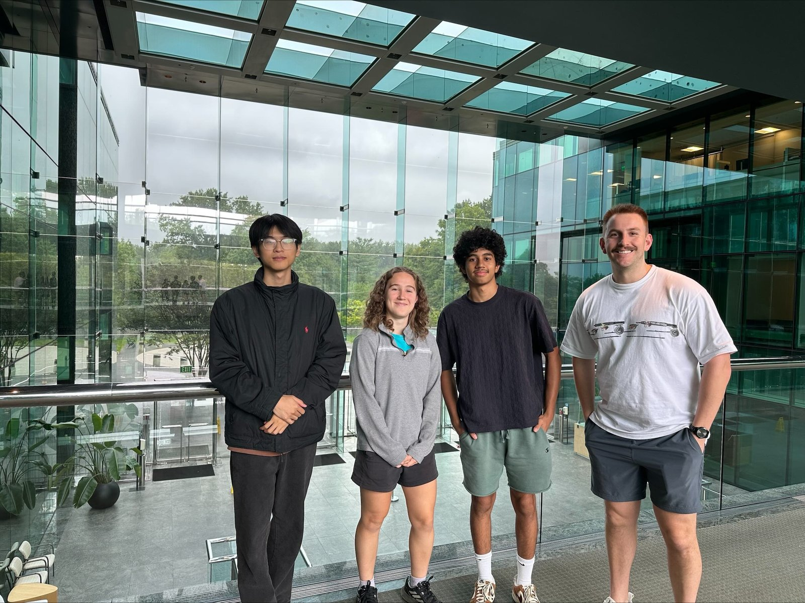

Simulating wildfire propagation in the wildland-urban interface (WUI)
A multi-agent simulation using the level set method
Overview and importance
In my summer 2026 internship with Prof. Susu Xu’s lab (Johns Hopkins University) as part of the Whiting Internships in Science and Engineering (WISE) program, I explored the methods that researchers use to simulate wildfire propagation. As climate change increases the frequency and intensity of wildfires, accurate wildfire models that can help with real-time prediction and remediation become critical. I created a wildfire simulation using the level-set method and incorporated AI agents to study how humans might respond. On my own, I developed an algorithm for converting Google Earth imagery into a map with material properties that affect how fires spread in the simulation.
One of the main foci of the project was what kind of environment we would simulate. The wildland-urban interface (WUI), where human settlements border or mix with wildland vegetation, is vulnerable to wildfires. The WUI covers less than 5% of global land area, but houses close to half the population. As a result, ⅔ of all people living near wildfires from 2003-2020 lived in the WUI. There are also unique difficulties to wildfire modeling and fighting in the WUI. Due to the mix of manmade structures and wildland vegetation, firefighters have to combat the fire itself and protect buildings simultaneously. Wildfire models become complicated in the WUI, where there are many factors affecting spread such as heterogeneous fuel types, wind, terrain, and human activity, all of which change as the fire changes. In the simulations of this process, there is a tradeoff between accuracy and computational speed. Additionally, there is a human element to consider. Individuals have different responses to disasters, which affect evacuation plans, risk, and mitigation. A simple version of human response was considered in this project. We added two agents using the OpenAI package that could move and interact in the simulation, as discussed later on.

The level set method
The model for this project used the level-set strategy, in which the landscape is assigned 0, negative or positive values depending on whether the area is at the fire front, already burnt, or has not yet been reached. This two-dimensional map evolves over time, and the relationship between the evolution and the speed of the fire front is modeled by a partial differential equation. We used numerical approximations to solve this equation by taking small timesteps.
However, over time, the approximation caused the simulation to distort. Fires would spawn in random places and the shape would change unpredictably. This meant the model was inaccurate for reasons other than its limitations, and this was a major challenge to solve. I remediated this by reinitializing the landscape function: updating the positive values based on the distance to the fire front (where it equaled 0), rather than to the origin of the fire, which had caused values to become too large over time.
Building the simulation map
To increase the realism of this project, I developed an algorithm to convert a representative WUI area into the map where we would simulate our fires. First, I found a 1km by 1km area near San Francisco where a suburban area met a wildland area with a clear delineation. I categorized the landscape features into buildings, roads, trees, and grass, then followed these steps to convert the image into a useful format (a numpy array). Although I only used one sample area for this project, this algorithm could be generalized for other areas.
- Manually select 3 samples of each material type from the image and find the RGB values using an online color picker
- Calculate the “average” RGB value for the materials
- Convert image into 100x100 array using Python Imaging Library (then, each pixel represents a 10m by 10m area)
- For each pixel (element in the array), calculate the magnitude of difference between its RGB and each average material (landscape feature) RGB
- Assign the element the material number (an arbitrary value representing a specific material) for the material that was closest to the element’s RGB
There are some limitations to this; first, the manual color picking is not viable for larger maps or multiple maps, nor are they necessarily representative of the actual average colors. It is clear from the final map that not all pixels were identified as the correct material. Additionally, there was no topographic data involved or combustion data about the materials, which would have major impacts on fire spread. However, this map was suitable for the scope of this project.
Results
A novel aspect of this simulation was to consider human behavior in response to fire propagation. This was accomplished by AI agents which had the choice to move, seek information, or communicate with limitations appropriate for humans. An interesting result was that the two agents communicated sufficiently for one of them to avoid the fire despite never seeing it. Unfortunately, the simulation lacked realistic parameters such as topography or changes in visibility that would enable realistic behavior.
Future research
Due to the limited timespan of this project, there were only a few variables considered for wildfire spread and the agents. The simulation map contained no topographical data, wind, or other factors which are major influences on wildfire spread. The map algorithm could be improved by using more complete datasets, such as LANDFIRE, which contain information about material properties and topography. The agents were also simple, with no demographic data or belief systems that would affect their behavior, and their actions were limited by the simulation itself.
The lab will continue developing a realistic fire model alongside complex AI agents that can act as human surrogates. Their goals are to investigate the interactions between people and fires, and to identify how policymakers can modify evacuation plans to account for the complex responses of individuals.
WISE group

Statement about AI use
In addition to the AI agents representing human choices in the simulation, AI was used to facilitate the coding process due to the limited time available for this research project. All scientific content during the project and in project summaries was human written.